소방시설관리사 (2013-05-11 기출문제)
1과목: 방안전관리론
1. 발화점(ignition point)이 가장 낮은 것은?
- 메탄(methane)
- 프로판(propane)
- 부탄(butane)
- 헥산(hexane)
(정답률: 46%)

2. 연소반응속도에 관한 설명으로 옳지 않은 것은?
- 분자간의 충돌빈도수가 증가할수록 증가한다.
- 활성화 에너지가 클수록 증가한다.
- 온도가 높을수록 증가한다.
- 시간 변화량에 대한 농도 변화량이 클수록 증가한다.
(정답률: 62%)
3. 액체이산화탄소 20kg이 30℃의 대기 중으로 방출되었다. 대기 중에서 기체상태의 이산화탄소 체적(m3)은 약 얼마인가? (단, 대기압은 1atm, 기체상수는 0.082ℓㆍatm/molㆍK, 이산화탄소는 이상기체 거동을 한다고 가정한다.)
- 1,118.2
- 11,293.6
- 17,145.5
- 18,263.6
(정답률: 66%)
4. 가연성 액체탄화수소가 유출되어 화재가 발생한 경우 소화에 적합한 Twin Agent System의 약제성분은?
- 단백포+제1종 분말소화약제
- 불화단백포+제2종 분말소화약제
- 수성막포+제3종 분말소화약제
- 합성계면활성제포+제4종 분말소화약제
(정답률: 74%)
5. 화재의 정의로 옳지 않은 것은?
- 불을 사용하는 사람의 부주의에 의해 불이 확대되는 연소현상이다.
- 사람의 의도에 반하여 출화되고 확대되는 연소현상이다.
- 인명 및 경제적인 손실을 방지하기 위하여 소화할 필요성이 있는 연소현상이다.
- 대기 중에 방치한 못이 공기 중의 산소와 반응하여 녹이 스는 연소현상이다.
(정답률: 68%)
6. 화재의 분류에 관한 설명으로 옳지 않은 것은?
- A급화재는 액체탄화수소의 화재로, 발생되는 연기의 색은 흑색이다.
- B급화재는 유류의 화재로, 이를 예방하기 위해서는 유증기의 체류를 방지해야 한다.
- C급화재는 전기화재로, 화재발생의 주요인으로는 과전류에 의한 열과 단락에 의한 스파크가 있다.
- D급화재는 금속화재로, 수계 소화약제로 소화할 경우 가연성 가스를 발생할 위험성이 있다.
(정답률: 70%)
7. 염화비닐 단량체(vinylchloride monomer)가 폴리염화비닐(polyvinylchloride)로 되는 반응 과정에서 발열을 동반하면서 압력이 급상승하여 폭발하는 현상은?
- 분해폭발
- 산화폭발
- 분무폭발
- 중합폭발
(정답률: 68%)
8. 화상(火傷)에 관한 설명으로 옳지 않은 것은?
- 15% 미만의 부분층 화상, 50% 이하의 표층화상을 경증화상이라 한다.
- 표피(epidermis)뿐만 아니라 진피(dermis)도 손상을 입은 화상을 3도화상이라 한다.
- 3도화상을 입은 환자는 쇼크에 빠질 우려가 있으므로 생체징후를 자주 측정하고 산소를 공급하면서 이송해야 한다.
- 10% 이상의 전층화상을 중증화상이라 한다.
(정답률: 54%)
9. 건축물의 화재안전에 대한 공간적 대응방법 중 대항성에 해당하지 않는 것은?
- 건축물 내장재의 불연화 성능
- 건축물 내화 성능
- 건축물 방화구획 성능
- 건축물 방ㆍ배연 성능
(정답률: 40%)
10. 건축물의 바깥쪽에 설치하는 피난계단의 구조로 기준에 적합하지 않은 것은?
- 건축물의 내부에서 계단으로 통하는 출입구는 갑종방화문으로 할 것
- 계단의 유효너비를 0.9m 이상으로 할 것
- 계단은 내화구조로 하고 지상까지 직접 연결할 것
- 계단은 그 계단으로 통하는 출입구 외의 창문 등으로부터 1m 이상의 거리에 두고 설치할 것
(정답률: 61%)
11. 목조 건축물의 화재에 관한 설명으로 옳지 않은 것은?
- 목조 건축물 화재 시 플래시오버(flashover)에 도달하는 시간이 내화 건축물 화재보다 빠르다.
- 건조한 목재는 셀룰로오스(cellulose)가 주성분이다.
- 목재는 열전도도가 낮아 철보다 단열효과가 작다.
- 목재에 함유되어 있는 수분의 양은 연소속도에 큰 영향을 미친다.
(정답률: 68%)
12. 건축물의 피난ㆍ방화등의 기준에 관한 규칙에서 내화구조인 벽에 관한 기준으로 옳지 않은 것은?
- 벽돌조로서 두께가 19cm 이상인 것
- 철근콘크리트조 또는 철골철근콘크리트조로서 두께가 10cm 이상인 것
- 골구를 철골조로 하고 그 양면을 두께 5cm 이상의 콘크리트블록ㆍ벽돌 또는 석재로 덮은 것
- 고온ㆍ고압의 증기로 양생된 경량기포 콘크리트패널 또는 경량기포 콘크리트블록조로서 두께가 20cm 이상인 것
(정답률: 34%)
13. 피난 복도 계획 시 고려해야 할 일반적인 사항에 해당되지 않는 것은?
- 피난 복도의 폭은 재실자가 빠른 시간 내에 안전한 피난처로 갈 수 있도록 하는 것이 좋다.
- 피난 복도의 천장은 가능한 낮게 하고 천장에는 불연재를 사용한다.
- 피난 복도에는 피난에 방해가 되는 시설물을 설치하지 않아야 한다.
- 피난 복도에는 피난방향 및 계단위치를 알 수 있는 표식을 한다.
(정답률: 73%)
14. 화재의 현장에 있는 불특정 다수인으로 이루어진 집단은 패닉(panic)상태가 되기 쉬운데, 이 집단의 일반적 특징으로 옳지 않은 것은?
- 우연적으로 발생하는 집단이다.
- 각 개인에게 임무가 부여되는 집단이다.
- 감정적인 분위기의 집단이다.
- 암시에 걸리기 쉬운 집단이다.
(정답률: 63%)
15. 다음은 건축법시행령상 피난안전구역에 관한 기준이다. ( ) 안에 알맞은 것은?
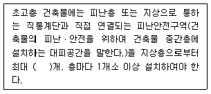
- 30
- 40
- 50
- 60
(정답률: 49%)
16. 구획화재에서 화재온도 상승곡선을 정하는 온도인자에 관한 설명으로 옳은 것은?
- 개구부 크기, 개구부 높이의 제곱근 및 실내의 전체 표면적에 비례한다.
- 개구부 크기에 비례하고 개구부 높이의 제곱근에 반비례한다.
- 개구부 크기, 개구부 높이의 제곱근에 비례하고 실내의 전체 표면적에 반비례한다.
- 개구부 크기에 반비례하고 개구부 높이의 제곱근에 비례한다.
(정답률: 37%)
17. 가로 10m, 세로 10m, 높이 3m의 공간에 발열량이 9,000kcal/kg인 가연물 3,000kg과 발열량이 4,500kcal/kg인 가연물 2,000kg이 저장된 실의 화재하중(kg/m2)은? (단, 목재의 단위발열량은 4,500kcal/kg이다.)
- 60
- 80
- 100
- 120
(정답률: 58%)
18. 열전도율 1.4kcal/mㆍhㆍ℃, 두께 10cm, 면적 30m2인 콘크리트 벽체가 있다. 벽체의 내측온도는 30℃, 외측온도는 -5℃일 때, 벽체를 통한 손실열량(kcal/h)은? (단, 푸리에(Fourier)법칙을 이용하여 구한다.)
- 14,700
- 15,400
- 16,200
- 17,500
(정답률: 50%)
19. 화재의 성장속도가 빠름(fast)이라고 가정할 때 열방출률 Q=αt2에서 화재강도계수 α(kW/s2)는 약 얼마인가? (단, t는 열방출률이 1,⑤5kW까지 도달하는데 걸리는 시간이다.)
- 0.00293
- 0.01172
- 0.04689
- 0.18757
(정답률: 31%)
20. 플래시오버(flashover)가 발생하기 위해 필요한 열량에 관한 설명으로 옳지 않은 것은?
- 열량은 환기구의 높이의 4제곱근에 비례한다.
- 열량은 단면적의 제곱근에 비례한다.
- 열량은 열손실계수의 제곱근에 비례한다.
- 열량은 접촉면의 표면적에 비례한다.
(정답률: 37%)
21. 허용농도가 가장 낮은 독성가스는?
- 일산화질소
- 황화수소
- 염화수소
- 염소
(정답률: 34%)
22. 발포 폴리스타이렌(expanded polystyrene)이 연소하였을 때 발생될 수 있는 연소가스로 옳지 않은 것은? (문제 오류로 실제 시험에서는 2, 3번이 정답처리 되었습니다. 여기서는 2번을 누르면 정답 처리 됩니다.)
- 이산화탄소
- 물
- 시안화수소
- 아크로레인
(정답률: 62%)
23. 가연물 연소 시 발생되는 연기의 농도와 가시거리에 관한 설명으로 옳지 않은 것은? (문제 오류로 실제 시험에서는 모두 정답처리 되었습니다. 여기서는 1번을 누르면 정답 처리 됩니다.)
- 어두침침한 것을 느낄 정도의 감광계수는 0.5m-1이고 가시거리가 4m이다.
- 건물을 잘 아는 사람이 피난에 지장을 느낄 정도의 감광계수는 0.3m-1이고 가시거리가 5m이다.
- 건물을 잘 알지 못하는 사람의 경우 가시거리는 20~30m이고 감광계수는 0.07~0.13m-1이다.
- 감광계수로 표시한 연기의 농도와 가시거리는 반비례의 관계를 갖는다.
(정답률: 55%)
24. 건축물 내 연기유동과 확산에 관한 설명으로 옳지 않은 것은?
- 연기가 수평으로 유동할 경우 속도는 약 0.5∼1m/s이다.
- 건물 내부의 온도가 건물 외부의 온도보다 높을 경우 굴뚝효과에 의한 연기의 흐름은 아래로 이동한다.
- 계단실 등 수직방향으로의 연기속도는 화재초기 약 1.5m/s, 농연 시 약 3~4m/s로 인간의 보행속도보다 빠르다.
- 연기의 비중은 공기보다 크지만 발생 직후의 연기는 온도가 높기 때문에 건물의 상층부로 이동한다.
(정답률: 56%)
25. 제연방식 중 화재 시 피난로가 되는 계단, 부속실 등에 외부공기를 급기하여 가압하는 방식은?
- Smoke tower 제연방식
- 제1종 기계제연방식
- 제2종 기계제연방식
- 제3종 기계제연방식
(정답률: 49%)
2과목: 소방수리학·약제화학 및 소방전
26. 다음에서 설명하고 있는 열역학 법칙은?
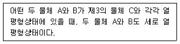
- 열역학 제0법칙
- 열역학 제1법칙
- 열역학 제2법칙
- 열역학 제3법칙
(정답률: 56%)
27. 그림과 같은 수평원형배관에 물이 충만하여 흐르는 정상유동에서 ㉮와 ㉯지점의 유속비 V1/V2은? (단, 물은 이상유체로 가정하고, ㉮지점에서 배관내경은 D1, 물의 유속은 V1이며, ㉯지점에서 배관내경은 D2, 물의 유속은 V2라 한다.)
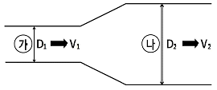
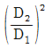
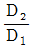
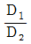
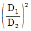
(정답률: 54%)
28. 물이 수평 원형배관 내를 충만하여 흐를 때 배관 내 어느 한 지점에서 물의 속도가 10m/s, 물의 정압력이 0.25MPa일 경우, 물의 속도수두(m)는 약 얼마인가?(단, 중력가속도는 9.8m/s2로 한다.)
- 1.1
- 3.1
- 5.1
- 7.1
(정답률: 39%)
29. 그림과 같이 밀폐계 속에 들어 있는 공기의 압력(1기압)을 일정하게 유지하면서 공기의 온도를 0℃에서 546℃로 증가시켰다. 546℃, 1기압 상태일 때의 공기체적(V)은 0℃, 1기압 상태일 때 공기체적(V0)의 약 몇 배인가? (단, 공기는 이상기체로 가정한다.)
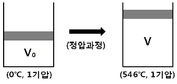
- 2
- 3
- 4
- 5
(정답률: 48%)
30. 관성력과 표면장력의 비를 나타내는 무차원수는?
- 그라쇼프(Grashof) 수
- 프루드(Froude) 수
- 오일러(Euler) 수
- 웨버(Weber) 수
(정답률: 49%)
31. 그림과 같이 비중이 1.2인 액체가 대기 중에 상부가 개방된 탱크에 들어 있을 때, A점의 계기압력은 수은주로 약 몇 mmHg인가? (단, 수은의 비중은 13.6, 물의 밀도는 1,000kg/m3이다.)
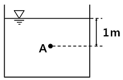
- 0.9
- 16.3
- 88.2
- 163.2
(정답률: 27%)
32. 내경이 D, 길이가 L인 직관으로 이루어진 소화배관에서 흐르는 물의 양이 200ℓ/min일 때 마찰손실압력은 0.02MPa이다. 이 소화배관에서 흐르는 물의 양이 400ℓ/min로 증가한다면 마찰손실압력(MPa)은 약 얼마인가? (단, 마찰손실계산은 Hazen-Williams의 식을 따르고, 소화배관의 조도계수는 일정하다.)
- 0.062
- 0.072
- 0.082
- 0.092
(정답률: 37%)
33. 옥내소화전설비에 사용하는 소화펌프의 토출량이 1,000ℓ/min, 전양정이 100m, 펌프 전효율이 65%일 때 전동기의 출력(kW)은 약 얼마인가? (단, 소화펌프와 전동기의 동력전달계수(K)는 1.1로 가정한다.)
- 22.6
- 25.6
- 27.6
- 30.6
(정답률: 54%)
34. 다음 중 화학적 소화원리에 해당하는 것은?
- 부촉매소화
- 질식소화
- 냉각소화
- 희석소화
(정답률: 60%)
35. 포소화약제의 유화효과(emulsion effect)를 이용하여 소화할 수 있는 방호대상물로 가장 적합한 장소는?
- 전자제품창고
- 유류저장고
- 종이창고
- 귀금속상점
(정답률: 55%)
36. 소화수에 사용되는 첨가제 중 침투제에 관한 설명으로 옳은 것은?
- 물의 표면장력을 감소시켜 심부화재소화를 돕는 첨가제
- 가연물과의 유화층 형성을 돕는 첨가제
- 물의 동결을 방지하기 위한 첨가제
- 물의 점도를 증가시켜 쉽게 흘러 유실되는 것을 방지하는 첨가제
(정답률: 57%)
37. 포노즐을 통하여 포수용액 80ℓ를 포팽창비 5.0으로 방출시킬 경우 방출된 포의 체적(ℓ)은?
- 0.0625
- 16
- 80
- 400
(정답률: 50%)
38. 질식소화를 위한 연소한계산소농도가14.7vol%인 가연물질의 소화에 필요한 CO2 가스의 최소소화농도(vol%)는? (단, 무유출(No efflux)방식을 전제로 한다.)
- 28
- 30
- 34
- 36
(정답률: 57%)
39. 다음 분말소화약제의 열분해 반응식과 관계가 있는 것은?
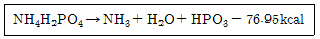
- 제1종 분말소화약제
- 제2종 분말소화약제
- 제3종 분말소화약제
- 제4종 분말소화약제
(정답률: 55%)
40. 그림과 같은 회로에서 저항 20Ω에 흐르는 전류가 4A라면, 전류 I(A)는?
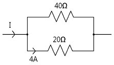
- 6
- 8
- 10
- 12
(정답률: 47%)
41. 회로에 100V의 전압을 인가하였더니 5A의 전류가 흘러 72kcal의 열량이 발생하였다. 이때 전류가 흐른 시간(초)은?
- 0.6
- 6
- 60
- 600
(정답률: 39%)
42. 정전용량이 같은 콘덴서 2개의 병렬합성 정전용량은 직렬합성 정전용량의 몇 배인가?
- 2
- 4
- 5
- 8
(정답률: 47%)
43. 100회 감은 코일과 쇄교하는 자속이 0.2초 동안에 5Wb에서 2Wb로 감소할 경우, 코일에 유도되는 기전력(V)은?
- 300
- 1,000
- 1,500
- 2,500
(정답률: 42%)
44. 그림과 같이 직렬로 접속된 2개의 코일에 5A의 전류를 흘릴 때 결합된 합성코일에 발생하는 자기 에너지(J)는? (단, 코일의 자기 인덕턴스 L1=L2=20mH, 상호인덕턴스 M=10mH이다.)
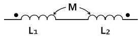
- 0.2
- 0.25
- 0.3
- 0.4
(정답률: 36%)
45. 전기계측기와 지시 값의 연결이 옳지 않은 것은?
- 가동코일형 계기 - 평균값 지시
- 정전형 계기 - 평균값 및 실효값 지시
- 열전형 계기 - 평균값 및 실효값 지시
- 유도형 계기 - 평균값 지시
(정답률: 28%)
46. v=50+20√2sin(ωt+20)+10√2sin(3ωt-40)[V]인 비정현파 교류전압의 실효값(V)은 약 얼마인가?
- 23.6
- 37.4
- 45.7
- 54.8
(정답률: 29%)
47. 그림과 같이 저항 5Ω, 유도리액턴스 8Ω, 용량리액턴스 5Ω이 직렬로 접속된 회로의 역률은 약 얼마인가?
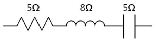
- 0.65
- 0.75
- 0.86
- 0.94
(정답률: 44%)
48. 그림과 같은 NAND 게이트와 등가인 논리식은?
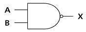
- X = A + B
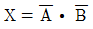
- X = A ㆍ B
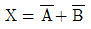
(정답률: 38%)
49. 다음 심벌이 의미하는 반도체 소자는?
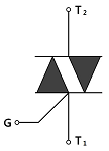
- DIAC
- TRIAC
- SCR
- SCS
(정답률: 48%)
50. 전선의 표시기호로서 천장은폐배선은?
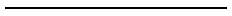
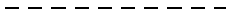
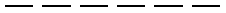
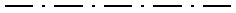
(정답률: 54%)
3과목: 소방관련법령
51. 소방기본법령상 소방기관ㆍ종합상황실ㆍ박물관 등의 설치ㆍ운영에 관한 설명으로 옳지 않은 것은?
- 시ㆍ도의 소방기관의 설치에 필요한 사항은 대통령령으로 정한다.
- 종합상황실의 설치ㆍ운영에 필요한 사항은 안전행정부령으로 정한다.
- 소방박물관의 설립과 운영에 필요한 사항은 안전행정부령으로 정한다.
- 소방체험관의 설립과 운영에 필요한 사항은 안전행정부령으로 정한다.
(정답률: 40%)
52. 소방기본법령에 관한 설명으로 옳지 않은 것은?
- 소방자동차의 우선 통행에 관하여는 소방기본법이 정하는 바에 따른다.
- 소방활동에 필요한 사람으로서 취재인력 등 보도업무에 종사하는 사람은 소방대장이 출입을 제한할 수 없다.
- 소방대상물에 화재가 발생한 경우 그 관계인은 소방활동에 종사하여도 소방활동의 비용을 지급받을 수 없다.
- 소방활동구역을 정하는 자는 소방대장이다.
(정답률: 45%)
53. 소방기본법령상 소방신호에 관한 설명으로 옳지 않은 것은?
- 화재예방, 소방활동 또는 소방훈련을 위하여 사용한다.
- 예방신호는 화재예방상 필요하다고 인정하거나 화재위험경보시 발령한다.
- 발화신호의 방법은 타종신호는 난타, 사이렌신호는 5초 간격을 두고 5초씩 3회 울린다.
- 해제 및 훈련신호도 소방신호에 해당한다.
(정답률: 54%)
54. 소방기본법령상 소방산업의 육성ㆍ진흥 및 지원 등에 관한 설명으로 옳지 않은 것은?
- 국가는 소방산업의 육성ㆍ진흥을 위하여 행정상ㆍ재정상의 지원시책을 마련하여야 한다.
- 국가는 우수 소방제품의 전시ㆍ홍보를 위하여 대외무역법에 의한 무역전시장을 설치한 자에게 소방산업전시회 관련 국외홍보비의 재정적인 지원을 할 수 있다.
- 국가는 고등교육법에 따른 전문대학에 소방기술의 연구ㆍ개발사업을 수행하게 할 수 있다.
- 국가는 소방기술 및 소방산업의 국외시장 개척을 위한 사업을 추진하여야 한다.
(정답률: 41%)
55. 소방시설공사업법령상 소방기술자에 해당하지 않는 자는?
- 섬유기사
- 공조냉동기계산업기사
- 광산보안기사
- 건축전기설비기술사
(정답률: 55%)
56. 소방시설공사업법령상 소방시설 공사에 관한 설명으로 옳지 않은 것은?
- 하나의 건축물에 영화상영관이 10개 이상인 신축 특정소방대상물은 성능위주설계를 하여야 한다.
- 공사업자가 구조변경ㆍ용도변경되는 특정소방대상물에 연소방지설비의 살수구역을 증설하는 공사를 할 경우 소방서장에게 착공신고를 하여야 한다.
- 하자보수 대상 소방시설 중 자동식소화기의 하자보수 보증기간은 3년이다.
- 연면적이 1,000제곱미터 이상인 특정소방대상물에 비상경보설비를 설치하는 경우에는 공사감리자를 지정해야 한다.
(정답률: 37%)
57. 지방소방기술심의위원회의 심의사항으로 옳은 것은?
- 화재안전기준에 관한 사항
- 소방시설의 설계 및 공사감리의 방법에 관한 사항
- 소방시설에 하자가 있는지의 판단에 관한 사항
- 소방시설공사의 하자를 판단하는 기준에 관한 사항
(정답률: 46%)
58. 소방시설 설치ㆍ유지 및 안전관리에 관한 법령상 특정소방대상물 중 근린생활시설에 해당하는 것은?
- 바닥면적이 500제곱미터인 안마원
- 바닥면적이 500제곱미터인 서커스장
- 바닥면적이 1,000제곱미터인 금융업소
- 바닥면적이 1,000제곱미터인 고시원
(정답률: 41%)
59. 특정소방대상물에 설치하는 소방시설 등의 유지ㆍ관리에 관한 설명으로 옳지 않은 것은?
- 소방방재청장이 정하는 내진설계기준에 맞게 설치하여야 하는 소방시설은 소화설비 및 경보설비를 말한다.
- 화재안전기준이 변경되어 그 기준이 강화되는 경우, 강화된 기준을 적용하여야 하는 소방시설에는 자동화재속보설비가 포함된다.
- 특정소방대상물이 증축되는 경우 기존 부분과 증축 부분이 내화구조로 된 바닥과 벽으로 구획되어 있으면 기존 부분에 대해서는 증축 당시의 화재안전기준을 적용하지 아니한다.
- 수용인원 100명 이상의 판매시설 중 대규모 점포는 보조마스크가 장착된 인명구조용 공기호흡기를 층마다 두 대 이상 갖추어 두어야 한다.
(정답률: 43%)
60. 소방시설 설치ㆍ유지 및 안전관리에 관한 법령상 방염대상물품을 방염성능기준 이상의 것으로 설치하여야 하는 대상에 해당하지 않는 것은?
- 근린생활시설 중 체력단련장
- 건축물 옥내에 있는 수영장
- 노유자 시설
- 층수가 13층인 업무시설
(정답률: 49%)
61. 소방시설 설치ㆍ유지 및 안전관리에 관한 법령상 소방본부장 또는 소방서장의 건축허가 등의 동의 대상물 범위에 해당하는 것은?
- 차고ㆍ주차장으로 사용되는 층 중 바닥면적이 100제곱미터 이상인 층이 있는 시설
- 승강기 등 기계장치에 의한 주차시설로서 자동차 10대 이상을 주차할 수 있는 시설
- 지하층이 있는 공연장으로서 공연장의 바닥면적이 100제곱미터인 층이 있는 건축물
- 노유자 시설로서 연면적 100제곱미터인 건축물
(정답률: 55%)
62. 소방시설 설치ㆍ유지 및 안전관리에 관한 법령상 복도 또는 통로로 연결된 둘 이상의 특정소방대상물을 하나의 소방대상물로 보지 않는 경우는?
- 내화구조로 된 연결통로가 벽이 없는 구조로서 길이가 10미터인 경우
- 내화구조가 아닌 연결통로로 연결된 경우
- 지하보도, 지하상가, 지하가로 연결된 경우
- 지하구로 연결된 경우
(정답률: 47%)
63. 우수소방대상물 선정업무의 객관성 및 전문성을 확보하기 위한 평가위원회의 위원으로 위촉될 수 없는 자는?
- 소방 관련 법인에서 소방 관련 업무에 5년 이상 종사한 사람
- 소방안전관리자로 선임된 소방기술사
- 소방공무원 교육기관에서 소방과 관련한 교육에 5년 이상 종사한 사람
- 소방관련 석사 학위 이상을 취득한 사람
(정답률: 38%)
64. 소방시설 설치ㆍ유지 및 안전관리에 관한 법령상 소방시설관리업에 관한 설명으로 옳지 않은 것은?
- 소방시설관리사가 동시에 둘 이상의 업체에 취업한 경우 그 자격을 취소하여야 한다.
- 소방공무원으로 4년을 근무하고, 소방시설공사업법에 따른 소방기술 인정 자격수첩을 발급받은 자는 소방시설관리업의 보조 기술인력으로 등록할 수 있다.
- 시ㆍ도지사는 등록수첩 재교부 신청서를 제출받은 때에는 10일 이내에 등록수첩을 재교부하여야 한다.
- 관리업자가 사망한 경우 그 상속인이 한정치산자라 할지라도 상속받은 날부터 3개월 동안은 관리업자의 지위를 승계할 수 있다.
(정답률: 37%)
65. 소방시설 설치ㆍ유지 및 안전관리에 관한 법령상 소방용품의 형식승인을 반드시 취소하여야 하는 경우가 아닌 것은?
- 거짓으로 형식승인을 받은 경우
- 거짓으로 보고 또는 자료제출을 한 경우
- 거짓으로 제품검사를 받은 경우
- 거짓으로 변경승인을 받은 경우
(정답률: 42%)
66. 소방시설 설치ㆍ유지 및 안전관리에 관한 법령상 벌칙 중 1년 이하의 징역 또는 1천만원 이하의 벌금에 처하는 경우에 해당하는 것은?
- 특정소방대상물의 소방시설 등이 화재안전기준에 따라 설치 또는 유지관리 되어 있지 아니하여 필요한 조치를 명하였으나 정당한 사유 없이 위반한 자
- 소방용품의 형식승인을 받지 아니하고 소방용품을 제조하거나 수입한 자
- 방염업의 등록을 하지 아니하고 영업을 한 자
- 특정소방대상물의 소방시설 등에 대한 자체점검을 하지 아니하거나 관리업자 등으로 하여금 정기적으로 점검하게 하지 아니한 자
(정답률: 40%)
67. 소방시설 설치ㆍ유지 및 안전관리에 관한 법령상 소방안전관리자 교육 등에 관한 설명으로 옳지 않은 것은?
- 2급 소방안전관리대상물의 소방안전관리자가 강습교육 신청시 경력증명서를 제출하여야 한다.
- 1급 소방안전관리자와 공공기관 소방안전관리자의 업무 강습시간은 40시간이다.
- 한국소방안전협회장은 소방안전관리자에 대한 실무교육을 2년마다 1회 이상 실시하여야 한다.
- 소방본부장 또는 소방서장은 실무교육이 효율적으로 이루어질 수 있도록 소방안전관리자 선임 및 변동사항에 대하여 반기별로 한국소방안전협회장에게 통보하여야 한다.
(정답률: 28%)
68. 위험물안전관리법령상 산화성고체에 해당하는 것은?
- 유기과산화물
- 질산에스테르류
- 중크롬산염류
- 히드록실아민염류
(정답률: 55%)
69. 위험물안전관리법령상 제조소 또는 일반취급소의 설비 중 변경허가를 받을 필요가 없는 경우는?
- 배출설비를 신설하는 경우
- 불활성기체의 봉입장치를 신설하는 경우
- 위험물취급탱크의 탱크전용실을 증설하는 경우
- 펌프설비를 증설하는 경우
(정답률: 45%)
70. 위험물안전관리법령상 제조소등의 관계인이 예방규정을 정하여야 하는 제조소등의 기준에 해당하는 것은?
- 지정수량의 10배 이상의 위험물을 취급하는 제조소
- 지정수량의 50배 이상의 위험물을 저장하는 옥외저장소
- 지정수량의 100배 이상의 위험물을 저장하는 옥내저장소
- 지정수량의 150배 이상의 위험물을 저장하는 옥외탱크저장소
(정답률: 55%)
71. 위험물안전관리법령상 시ㆍ도지사의 권한을 한국소방산업기술원에 위탁하는 업무에 해당하는 것은?
- 제조소등의 설치허가 또는 변경허가
- 군사목적인 제조소등의 설치에 관한 군부대의 장과의 협의
- 위험물의 품명ㆍ수량 또는 지정수량 배수의 변경신고의 수리
- 저장용량이 70만리터인 옥외탱크저장소 설치에 따른 완공검사
(정답률: 48%)
72. 다중이용업소의 안전관리기본계획 등에 관한 설명으로 옳지 않은 것은?
- 소방방재청장은 다중이용업소의 안전관리기본계획을 5년마다 수립ㆍ시행하여야 한다.
- 소방방재청장은 기본계획에 따라 매년 연도별 안전관리계획을 수립ㆍ시행하여야 한다.
- 다중이용업소의 안전관리를 위하여 시ㆍ도지사는 매년 안전관리집행계획을 수립하여 소방방재청장에게 제출하여야 한다.
- 다중이용업소의 안전관리집행계획은 해당 연도 전년 12월 31일까지 수립하여야 한다.
(정답률: 38%)
73. 다중이용업소의 영업장에 설치ㆍ유지하여야 하는 안전시설 등에 관한 설명으로 옳지 않은 것은?
- 지하층에 설치된 영업장에는 간이스프링클러설비를 설치하여야 한다.
- 노래반주기 등 영상음향장치를 사용하는 영업장에는 비상벨설비를 설치하여야 한다.
- 가스시설을 사용하는 주방이나 난방시설이 있는 영업장에는 가스누설경보기를 설치하여야 한다.
- 단란주점영업과 유흥주점영업의 영업장에는 피난유도선을 설치하여야 한다.
(정답률: 56%)
74. 다중이용업소의 화재배상책임보험에 관한 설명으로 옳지 않은 것은?
- 사망의 경우 피해자 1명당 1억원의 범위에서 피해자에게 발생한 손해액을 지급한다.
- 척추체 분쇄성 골절 부상의 경우 1천만원 범위에서 피해자에게 발생한 손해액을 지급한다.
- 안전시설 등을 설치하려는 경우 다중이용업주는 화재배상책임보험에 가입한 후 그 증명서를 소방본부장 또는 소방서장에게 제출하여야 한다.
- 보험회사는 화재배상책임보험에 가입하여야 할 자와 계약을 체결한 경우 그 사실을 보험회사의 전산시스템에 입력한 날부터 5일 이내에 소방서장에게 알려야 한다.
(정답률: 31%)
75. 다중이용업소의 화재위험평가 등에 관한 설명으로 옳지 않은 것은?
- 5층 이상인 건축물로서 다중이용업소가 10개 이상인 경우 화재위험평가를 할 수 있다.
- 위험유발지수의 산정기준, 방법 등은 소방방재청장이 고시한다.
- 소방서장은 화재위험유발지수가 C등급인 경우 조치를 명할 수 있다.
- 화재위험평가 대행자가 화재위험평가서를 허위로 작성한 경우 1차 행정처분기준은 업무정지 6월이다.
(정답률: 47%)
4과목: 위험물의 성상 및 시설기준
76. 질산염류 150kg, 염소산염류 300kg, 과망간산염류 3,000kg을 동일한 장소에 저장하고 있는 경우 지정수량의 몇 배인가?
- 4.3
- 7
- 9.5
- 16.5
(정답률: 53%)
77. 제1류 위험물에 관한 설명으로 옳은 것은?
- 산화성 고체로서 모두 물보다 가벼운 고체물질이다.
- 브롬산염류, 과염소산, 과산화수소 등이 있다.
- 무기과산화물의 화재시 주수 소화해야 한다.
- 가열ㆍ충격ㆍ마찰에 의하여 폭발의 위험성이 있다.
(정답률: 46%)
78. 위험물의 특징에 관한 설명으로 옳은 것은?
- 삼황화린은 약100℃에서 발화하며 이황화탄소에 녹는다.
- 적린은 황린에 비하여 화학적으로 활성이 크고 물에 잘 녹는다.
- 유황은 연소시 유독성의 오산화인이 생성된다.
- 마그네슘 화재시 물을 주수하면 산소가 발생하여 폭발적으로 연소한다.
(정답률: 30%)
79. 제2류 위험물인 금속분에 해당되는 것은? (단, 150마이크로미터의 체를 통과하는 것이 50중량퍼센트 미만인 것은 제외)
- 세슘분(Cs)
- 구리분(Cu)
- 은분(Ag)
- 철분(Fe)
(정답률: 32%)
80. 탄화칼슘(CaC2)과 탄화알루미늄(Al4C3)에 관한 설명으로 옳은 것은?
- 탄화칼슘과 물이 반응할 때 생성되는 프로필렌은 금속과 반응하여 아세틸라이드(acetylide)를 만든다.
- 저장시 발생하는 가스에 의해 용기의 내부압력이 상승하므로 개방된 용기에 저장한다.
- 탄화알루미늄은 물과 반응시 아세틸렌가스가 발생하므로 위험하다.
- 소화시 물, 포의 사용을 금한다.
(정답률: 38%)
81. 제3류 위험물의 성질에 관한 설명으로 옳지 않은 것은?
- 인화칼슘은 물과 반응하여 PH3가 발생한다.
- 나트륨 화재시 주수 소화를 하는 것이 안전하다.
- 황린은 발화점이 매우 낮고 공기 중에서 자연발화하기 쉽다.
- 칼륨은 물과 반응하여 발열하고 H2가 발생한다.
(정답률: 57%)
82. 제4류 위험물의 인화점에 따른 구분과 종류를 연결한 것 중 옳지 않은 것은?
- 인화점 영하 10℃이하 - 특수인화물 - 메탄올
- 인화점 200℃이상 250℃미만 - 제4석유류 - 기어유
- 인화점 21℃이상 70℃미만 - 제2석유류 - 경유
- 인화점 21℃미만 - 제1석유류 - 휘발유
(정답률: 48%)
83. 제4류 위험물에 관한 설명으로 옳지 않은 것은?
- 크레오소트유–나프탈렌과 안트라센이 주성분이며 금속에 대한 부식성이 있다.
- 아크로레인–중합반응을 일으킬 수 있으며 공기에 의해 산화되어 프로필알코올이 된다.
- 콜로디온–용제(에탄올과 에테르)가 증발하면 제5류 위험물과 같은 위험성이 있다.
- 글리세린–니트로글리세린의 원료이며 과망간산칼륨과 혼촉발화한다.
(정답률: 20%)
84. 제5류 위험물의 종류와 성질 및 취급에 관한 설명으로 옳지 않은 것은?
- 유기과산화물의 지정수량은 10kg이다.
- 질산에스테르류는 외부로부터 산소의 공급이 없어도 자기연소하며 연소속도가 빠르다.
- 니트로글리세린, 알킬리튬, 알킬알루미늄 등이 있다.
- 위험물제조소에는 적색바탕에 백색문자로 “화기엄금”이라는 주의사항을 표시한 게시판을 설치해야 한다.
(정답률: 49%)
85. 니트로셀룰로오스에 관한 설명으로 옳은 것은?
- 지정수량은 100kg이다.
- 물에는 녹지 않고 아세톤에는 녹는다.
- 질화도가 클수록 폭발 위험성이 낮다.
- 셀룰로오스에 진한 염산과 진한 질산을 혼산으로 반응시켜 제조한 것이다.
(정답률: 34%)
86. 제6류 위험물에 해당되는 것은?
- 질산구아니딘
- 염소화규소화합물
- 할로겐간화합물
- 과요오드산
(정답률: 44%)
87. 제6류 위험물의 특징에 관한 설명으로 옳지 않은 것은?
- 위험물안전관리법령상 모두 위험등급Ⅰ에 해당한다.
- 과염소산은 밀폐용기에 넣어 냉암소에 저장한다.
- 과산화수소 분해시 발생하는 발생기 산소는 표백과 살균효과가 있다.
- 질산은 단백질과 크산토프로테인(xanthoprotein) 반응을 하여 붉은색으로 변한다.
(정답률: 31%)
88. 위험물안전관리법령상 안전거리에 관하여 규제를 받지 않는 제조소등으로만 짝지어진 것은?
- 옥내저장소, 암반탱크저장소
- 지하탱크저장소, 옥내탱크저장소
- 옥외탱크저장소, 제조소
- 일반취급소, 옥외저장소
(정답률: 50%)
89. 위험물안전관리법령상 위험물제조소의 기준으로 옳은 것은?
- 조명설비의 전선은 내화ㆍ내열전선으로 할 것
- 채광설비는 연소의 우려가 없는 장소에 설치하되 채광면적을 최대로 할 것
- 환기설비의 급기구는 높은 곳에 설치하고 구리망 등으로 인화방지망을 설치할 것
- 배출설비의 배풍기는 자연배기방식으로 할 것
(정답률: 33%)
90. 위험물제조소의 하나의 방유제 안에 톨루엔 200m3와 경유 100m3를 저장한 옥외취급탱크가 각 1기씩 있다. 위험물안전관리법령상 탱크 주위에 설치하여야 할 방유제 용량은 최소 몇 m3 이상이 되어야 하는가?
- 100
- 110
- 220
- 330
(정답률: 39%)
91. 위험물안전관리법령상 위험물의 성질에 따른 제조소의 특례에 관한 내용으로 옳지 않은 것은?
- 산화프로필렌을 취급하는 설비는 은ㆍ수은ㆍ동ㆍ마그네슘 또는 이들을 성분으로 하는 합금으로 만들지 아니할 것
- 알킬리튬을 취급하는 설비에는 불활성기체를 봉입하는 장치를 갖출 것
- 디에틸에테르를 취급하는 설비에는 온도 및 농도의 상승에 의한 위험한 반응을 방지하기 위한 조치를 강구할 것
- 히드록실아민염류를 취급하는 설비에는 철이온 등의 혼입에 의한 위험한 반응을 방지하기 위한 조치를 강구할 것
(정답률: 20%)
92. 위험물안전관리법령상 위험물제조소에 설치하는 옥내소화전설비의 설치기준으로 옳지 않은 것은?
- 비상전원의 용량은 그 설비를 유효하게 20분이상 작동시키는 것이 가능할 것
- 배선은 600V 2종 비닐전선 또는 이와 동등이상의 내열성을 갖는 전선을 사용할 것
- 각 소화전의 노즐선단 방수량은 260ℓ/min이상일 것
- 주배관 중 입상관은 관의 직경이 50mm이상인 것으로 할 것
(정답률: 31%)
93. 위험물안전관리법령상 위험물제조소에서 저장 또는 취급하는 위험물에 표시해야 하는 게시판의 주의사항이 옳게 연결된 것은?
- 마그네슘, 인화성고체 - 화기주의
- 질산메틸, 적린 - 화기주의
- 칼슘카바이드, 철분 - 물기엄금
- 톨루엔, 황린 - 화기엄금
(정답률: 34%)
94. 위험물안전관리법령상 옥내저장소의 시설기준에 관한 내용으로 옳지 않은 것은? (단, 다층건물 및 복합용도 건축물의 옥내저장소는 제외) (문제 오류로 실제 시험에서는 2, 4번이 정답처리 되었습니다. 여기서는 2번을 누르면 정답 처리 됩니다.)
- 저장창고는 위험물 저장을 전용으로 하는 독립된 건축물로 하여야 한다.
- 지붕은 내화구조로 하되 반자를 설치하여야 한다.
- 제1류 위험물을 저장할 경우 지면에서 처마까지의 높이가 6m미만의 단층 건물로 해야 한다.
- 내화구조로 된 옥내저장소에 적린 600kg을 저장할 경우 너비 2m이상의 공지를 확보해야 한다.
(정답률: 52%)
95. 위험물안전관리법령상 이황화탄소를 제외한 인화성 액체위험물을 저장하는 옥외탱크저장소의 방유제 시설기준에 관한 내용으로 옳지 않은 것은?
- 방유제의 높이는 0.5m이상, 3m이하로 한다.
- 옥외저장탱크의 총용량이 20만ℓ초과인 경우 방유제 내에 설치하는 탱크수는 10이하로 한다.
- 방유제 안에 탱크가 1개 설치된 경우 방유제의 용량은 그 탱크 용량으로 한다.
- 높이가 1m를 넘는 방유제의 안팎에는 계단 또는 경사로를 약50m마다 설치해야 한다.
(정답률: 41%)
96. 위험물안전관리법령상 이동탱크저장소의 시설기준에 관한 내용으로 옳은 것은?
- 옥외 상치장소로서 인근에 1층 건축물이 있는 경우에는 5m이상 거리를 두어야 한다.
- 압력탱크 외의 탱크는 70kPa의 압력으로 30분간 수압시험을 실시하여 새거나 변형되지 않아야 한다.
- 액체위험물의 탱크내부에는 4,000ℓ이하마다 3.2mm이상의 강철판 등으로 칸막이를 설치해야 한다.
- 차량의 전면 및 후면에는 사각형의 백색바탕에 적색의 반사도료로 “위험물”이라고 표시한 표지를 설치해야 한다.
(정답률: 38%)
97. 위험물안전관리법령상 과산화수소 5,000kg을 저장하는 옥외저장소에 설치하여야 할 경보설비의 종류에 해당되지 않는 것은?
- 자동화재탐지설비
- 비상경보설비
- 확성장치
- 자동화재속보설비
(정답률: 43%)
98. 위험물안전관리법령상 금속분, 마그네슘을 저장하는 곳에 적응성이 있는 소화설비를 다음 보기에서 모두 고른 것은?
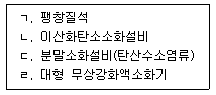
- ㄱ, ㄷ
- ㄱ, ㄹ
- ㄱ, ㄴ, ㄷ
- ㄴ, ㄷ, ㄹ
(정답률: 48%)
99. 위험물안전관리법령상 이송취급소의 시설기준에 관한 내용으로 옳지 않은 것은?
- 해상에 설치한 배관에는 외면부식을 방지하기 위한 도장을 실시하여야 한다.
- 도장을 한 배관은 지표면에 접하여 지상에 설치할 수 있다.
- 지하매설 배관은 지하가 내의 건축물을 제외하고는 그 외면으로부터 건축물까지 1.5m이상 안전거리를 두어야 한다.
- 해저에 배관을 설치하는 경우에는 원칙적으로 이미 설치된 배관에 대하여 30m이상의 안전거리를 두어야 한다.
(정답률: 44%)
100. 위험물안전관리법령상 주유취급소에 설치할 수 있는 건축물이나 공작물 등에 해당되지 않는 것은?
- 주유취급소에 출입하는 사람을 대상으로 하는 일반음식점
- 자동차 등의 간이정비를 위한 작업장
- 자동차 등의 세정을 위한 작업장
- 전기자동차용 충전설비
(정답률: 41%)
5과목: 소방시설의 구조원리
101. 내화구조의 건축물에 바닥면적이 310m2인 무도학원(실내마감재료는 불연재료)에 소화기구 설치시 필요한 최소능력단위는?
- 3
- 6
- 8
- 11
(정답률: 48%)
102. 전양정이 50m이고 회전수가 2,000rpm인 원심펌프의 회전수를 2,400rpm으로 변경하여 운전하는 경우 펌프의 전양정(m)은?
- 34.7
- 60
- 72
- 86.4
(정답률: 58%)
103. 옥내소화전설비의 화재안전기준에서 내열전선의 내열성능에 관한 설명이다. ( )안에 들어갈 내용으로 옳은 것은? (순서대로 ㉠, ㉡, ㉢, ㉣)
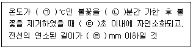
- 716±10, 20, 10, 180
- 816±10, 20, 10, 180
- 716±10, 10, 20, 380
- 816±10, 10, 20, 380
(정답률: 47%)
104. 옥외소화전설비의 화재안전기준에 의하여 옥외소화전을 11개 이상 30개 이하 설치시 몇 개 이상의 소화전함을 분산 설치하여야 하는가?
- 5
- 11
- 16
- 21
(정답률: 67%)
1⑤. 간이스프링클러설비의 설치기준으로 옳지 않은 것은?
- 간이헤드의 작동온도는 실내의 최대 주위 천장온도가 0℃ 이상 38℃ 이하인 경우 공칭작동온도가 57℃에서 77℃의 것을 사용할 것
- 상수도직결형의 상수도압력은 가장 먼 가지배관에서 2개의 간이헤드를 동시에 개방할 경우 각각의 간이헤드 선단 방수압력은 0.1MPa 이상으로 할 것
- 비상전원은 간이스프링클러설비를 유효하게 10분(근린생활시설의 경우 20분) 이상 작동될 수 있도록 할 것
- 송수구는 구경 65mm의 단구형 또는 쌍구형으로 하여야 하며, 송수배관의 안지름은 32mm 이상으로 할 것
(정답률: 59%)
106. 물분무소화설비를 설치하는 차고 또는 주차장의 배수설비 설치기준으로 옳은 것은?
- 차량이 주차하는 장소의 적당한 곳에 높이 15cm 이상의 경계턱으로 배수구를 설치할 것
- 길이 60m 이하마다 집수관ㆍ소화핏트 등 기름분리장치를 설치할 것
- 차량이 주차하는 바닥은 배수구를 향하여 100분의 1 이상의 기울기를 유지할 것
- 배수설비는 가압송수장치의 최대송수능력의 수량을 유효하게 배수할 수 있는 크기 및 기울기로 할 것
(정답률: 66%)
107. 포소화설비의 자동식 기동장치로 폐쇄형스프링클러헤드를 사용하는 경우 설치기준으로 옳지 않은 것은?
- 표시온도가 103℃ 이상인 것을 사용할 것
- 부착면의 높이는 바닥으로부터 5m 이하로 할 것
- 1개의 스프링클러헤드의 경계면적은 20m2 이하로 할 것
- 하나의 감지장치 경계구역은 하나의 층이 되도록 할 것
(정답률: 56%)
108. 포소화설비의 화재안전기준에서 전역방출방식의 고발포용고정포방출구의 설치기준으로 옳지 않은 것은?
- 차고 또는 주차장의 대상물에 포의 팽창비가 300인 고정포방출구는 당해 방호구역의 관포체적 1m3에 대하여 1분당 방출량이 0.28ℓ 이상의 양이 되도록 할 것
- 항공기 격납고의 대상물에 포의 팽창비가 300인 고정포방출구는 당해 방호구역의 관포체적 1m3에 대하여 1분당 방출량이 0.5ℓ 이상의 양이 되도록 할 것
- 고정포방출구는 바닥면적 500m2 마다 1개 이상으로 할 것
- 고정포방출구는 방호대상물의 최고부분보다 낮은 위치에 설치할 것
(정답률: 61%)
109. 다음과 같은 조건에서 이산화탄소소화설비의 최소약제량(kg)은?
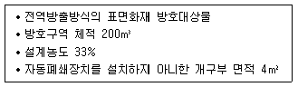
- 180
- 200
- 220
- 240
(정답률: 42%)
110. 할로겐화합물소화설비의 화재안전기준에 의한 기동장치의 설치기준으로 옳은 것은?
- 수동식 기동장치의 조작부는 바닥으로부터 높이 1m 이상 1.5m 이하의 위치에 설치할 것
- 가스압력식 기동장치의 기동용가스용기는 25MPa 이상의 압력에 견딜 수 있을 것
- 가스압력식 기동장치의 기동용가스용기에는 내압시험압력의 0.8배 내지 1.2배 사이에서 작동하는 안전장치를 설치할 것
- 수동식기동장치의 전역방출방식에 있어서는 방호대상물마다, 국소방출방식에 있어서는 방호구역마다 설치할 것
(정답률: 54%)
111. 바닥면적이 400m2인 발전기실(층고 3m)에 소화농도 7%로 HFC-227ea를 설치시 소요되는 최저의 소화약제량(kg)은 약 얼마인가?
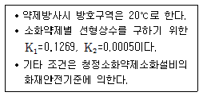
- 330
- 402
- 804
- 877
(정답률: 19%)
112. 청정소화약제소화설비를 사람이 상주하는 곳에 설치시 소화약제량의 최대허용설계농도기준으로 옳지 않은 것은?
- HCFC BLEND A : 10%
- HFC-23 : 40%
- HFC-125 : 11.5%
- IG-55 : 43%
(정답률: 52%)
113. 분말소화설비의 화재안전기준에 따른 소화약제 저장용기의 설치기준으로 옳지 않은 것은?
- 제3종 분말 저장용기의 내용적은 소화약제 1kg당 1ℓ로 할 것
- 저장용기의 충전비는 0.8 이상으로 할 것
- 축압식 저장용기에 내압시험압력의 1.8배 이하에서 작동하는 안전밸브를 설치할 것
- 저장용기 및 배관에 잔류 소화약제를 처리할 수 있는 청소장치를 설치할 것
(정답률: 48%)
114. 다음 조건에서 준비작동식 스프링클러설비 설치시 감지기의 최소설치 개수는?
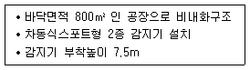
- 23
- 32
- 46
- 64
(정답률: 39%)
115. 자동화재속보설비의 화재안전기준에 의한 설치기준으로 옳지 않은 것은?
- 노유자시설에 상시 근무인원이 10인 이하인 경우 자동화재속보설비를 설치하지 아니할 수 있다.
- 스위치는 바닥으로부터 0.8m 이상 1.5m 이하의 높이에 설치하여야 한다.
- 속보기는 소방관서에 통신망으로 통보하도록 하여야 한다.
- 자동화재탐지설비와 연동으로 작동하여 자동적으로 화재발생상황을 소방관서에 전달되는 것으로 하여야 한다.
(정답률: 66%)
116. 비상방송설비의 화재안전기준에 의하여 연면적이 5,000m2 인 특정소방대상물(지하1층, 지상5층)의 지상1층에서 화재발생 시 경보를 발하여야 하는 층은?
- 지하1층, 1층, 2층
- 1층, 2층, 3층
- 1층, 2층, 5층
- 전체층
(정답률: 66%)
117. 누전경보기의 화재안전기준에 의한 설치기준으로 옳지 않은 것은?
- 경계전로의 정격전류가 60A를 초과하는 전로에 있어서는 1급 누전경보기를 설치할 것
- 누전경보기 수신부의 음향장치는 수위실 등 상시 사람이 근무하는 장소에 설치할 것
- 변류기를 옥외의 전로에 설치하는 경우에는 옥외형으로 설치할 것
- 전원은 분전반으로부터 전용회로로 하고, 각 극에 개폐기 및 60A 이하의 과전류 차단기를 설치할 것
(정답률: 60%)
118. 피난기구 설치시 피난 또는 소화활동상 유효한 개구부의 크기 기준으로 옳은 것은?
- 가로 0.5m 이상, 세로 1m 이상
- 가로 및 세로가 각 0.6m 이상
- 가로 0.3m 이상, 세로 0.6m 이상
- 가로 0.5m 이상, 세로 0.8m 이상
(정답률: 55%)
119. 광원점등방식 피난유도선의 설치기준으로 옳지 않은 것은?
- 피난유도 표시부는 80cm 이내의 간격으로 연속되도록 설치하되 실내장식물 등으로 설치가 곤란할 경우 2m 이내로 설치할 것
- 비상전원은 상시 충전상태를 유지하도록 설치할 것
- 피난유도 제어부는 조작 및 관리가 용이하도록 바닥으로부터 0.8m 이상 1.5m 이하의 높이에 설치할 것
- 피난유도 표시부는 바닥으로부터 높이 1m 이하의 위치 또는 바닥 면에 설치할 것
(정답률: 59%)
120. 다음은 제연설비의 공기유입방식 및 유입구에 관한 화재안전기준이다. ( )안에 들어갈 내용으로 옳은 것은? (순서대로 ㉠, ㉡)
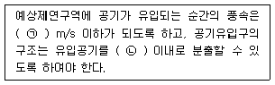
- 3, 하향 45°
- 5, 하향 60°
- 3, 상향 45°
- 5, 상향 60°
(정답률: 57%)
121. 특별피난계단의 부속실에 설치된 제연설비의 제어반기능에 관한 기준으로 옳지 않은 것은?
- 급기용 댐퍼의 개폐에 대한 감시 및 원격조작기능
- 급기송풍기와 유입공기의 배출용 송풍기의 작동여부에 대한 감시 및 원격조작기능
- 수동기동장치의 작동여부에 대한 감시기능
- 비상전원의 원격조작기능
(정답률: 65%)
122. 연결살수설비의 화재안전기준에 의한 설치기준으로 옳지 않은 것은?
- 교차배관에는 가지배관과 가지배관사이마다 1개 이상의 행가를 설치하되, 가지배관 사이의 거리가 4.5m를 초과하는 경우에는 4.5m 이내마다 1개 이상 설치할 것
- 개방형헤드를 사용하는 연결살수설비의 수평주행배관은 헤드를 향하여 상향으로 100분의 1 이상의 기울기로 설치할 것
- 천장 또는 반자의 각 부분으로부터 하나의 살수헤드까지의 수평거리가 연결살수설비전용헤드의 경우 2.3m 이하로 할 것
- 습식 연결살수설비의 배관은 동결방지조치를 하거나 동결의 우려가 없는 장소에 설치할 것
(정답률: 55%)
123. 비상콘센트설비의 화재안전기준에 관한 설명으로 옳지 않은 것은?
- 하나의 전용회로에 설치하는 비상콘센트는 10개 이하로 할 것
- 비상콘센트의 전원부와 외함 사이의 절연저항은 전원부와 외함 사이를 500V 절연저항계로 측정할 때 20MΩ 미만일 것
- 비상콘센트는 바닥으로부터 0.8m 이상 1.5m 이하의 위치에 설치할 것
- 전원회로는 각 층에 2 이상이 되도록 설치할 것. 다만, 설치하여야 할 층의 비상콘센트가 1개인 때에는 하나의 회로로 할 수 있다.
(정답률: 54%)
124. 무선통신보조설비를 구성하는 장치로서 두 개 이상의 입력신호를 원하는 비율로 조합한 출력이 발생하도록 하는 장치는?
- 분배기
- 분파기
- 증폭기
- 혼합기
(정답률: 72%)
125. 연소방지설비의 화재안전기준에서 연소방지도료의 도포방법에 관한 설명으로 옳지 않은 것은?
- 케이블이 상호연결된 부분의 경우 연결된 부분의 중심으로부터 양쪽 방향으로 5m 이상 연소방지도료로 도포한다.
- 두께는 평균 1mm 이상으로 도포한다.
- 유성도료의 1회당 도포간격은 2시간 이상으로 한다.
- 케이블을 내화배선 방법으로 설치한 경우에는 도포하지 아니할 수 있다.
(정답률: 40%)